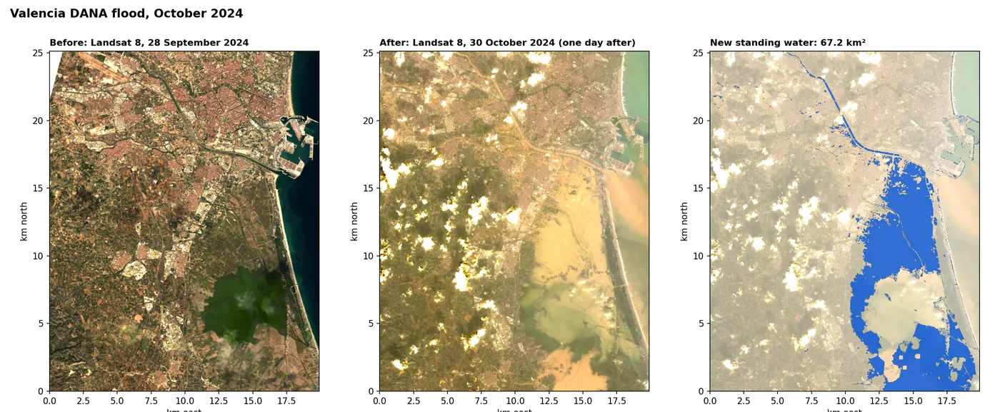
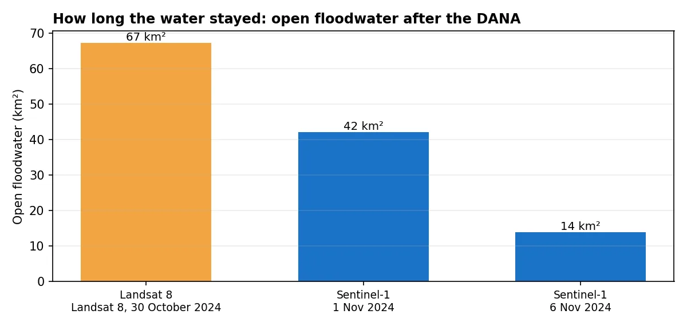
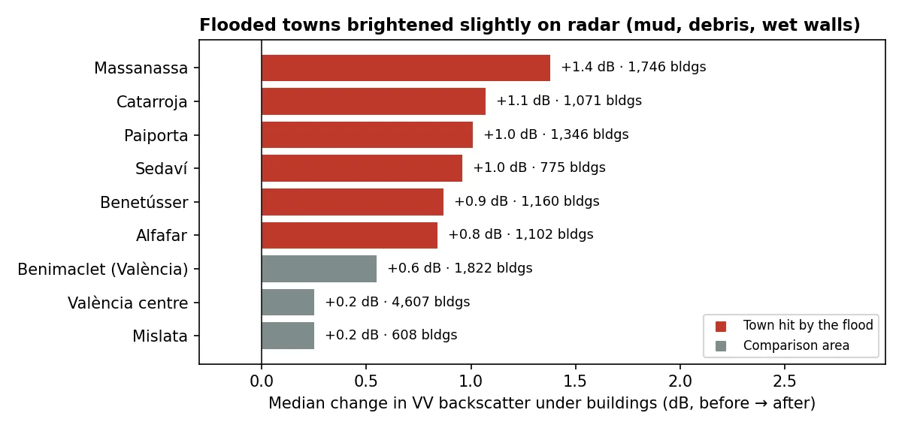

问题
应急团队和保险公司需要快速、大范围地知道洪水去了哪里、停留了多久。洪水刚过时实地调查既慢又危险，而风暴云又常常挡住普通的卫星照片。
我做了什么
- 对比洪水前后的光学影像。Landsat 8 在 9 月 28 日和洪水后一天的 10 月 30 日拍摄了该地区。水体指数（MNDWI改进归一化水体指数：(绿光 − 短波红外) ÷ (绿光 + 短波红外)。水体的值大于零。）显示哪些像元变成了水。
- 让数据自己决定阈值。不靠肉眼挑阈值，而是用 Otsu大津法：在直方图中自动找出最能把两类（这里是水和陆地）分开的阈值，不需要人为指定。 从影像本身求出。之后把阈值上下移动重新制图，看结果对阈值有多敏感。
- 加入能穿透云层的雷达。10 月 20 日和 11 月 1 日的 Sentinel-1 SAR合成孔径雷达。卫星自己发射微波脉冲，所以无论白天黑夜都能穿透云层成像。 影像中，水体呈暗色。只有洪水后变暗、洪水前不暗、且至少暗了 3 dB分贝：雷达亮度的对数刻度，每 10 dB 代表反射能量相差十倍。 的像元才算被淹。
- 跟踪洪水消退。第二对雷达影像（10 月 25 日和 11 月 6 日）显示一周后还剩多少积水。
- 统计受影响的建筑。把 79,000 个 OpenStreetMap 建筑轮廓叠加到洪水图上。
地图显示了什么

大部分洪水停留在阿尔武费拉潟湖周围的稻田和农田上。两颗卫星相隔三天，对大片水体的判断一致：雷达证实了 Landsat 所绘面积的 57%，还发现了 Landsat 因云层遮挡漏掉的 3.5 km²。


受灾最重的城镇，例如 Paiporta 和 Catarroja，在卫星过境前积水就已经退去，所以在图上看不到开阔水面。但在雷达上，这些城镇的建筑亮度增加了 0.8 到 1.4 dB，而未受淹的瓦伦西亚市区只变化了 0.25 到 0.55 dB。淤泥、杂物和潮湿的墙面解释了这一差异。
结果有多可靠？
- 建筑数量是下限。10 月 30 日只有 191 栋建筑位于开阔积水中，更多建筑被已经退去的洪水损坏。
- 阈值有影响。把 Landsat 阈值上下移动 ±0.15，面积在 51 到 99 km² 之间。这个范围与主要结果一并报告。
- 每颗卫星只有一个时相。两次过境之间来了又退的洪水无法被观测到。
- 尚未与官方地图核对，例如 Copernicus 应急管理服务针对此次事件发布的范围图。
可以交付什么
- 每个日期的洪水范围图层（GeoTIFF 和 GeoPackage）
- 受影响建筑和道路清单
- 附不确定性范围的地图和简明报告，可直接交给应急、保险或规划团队
- 全部代码，下次事件可以直接重跑同样的分析